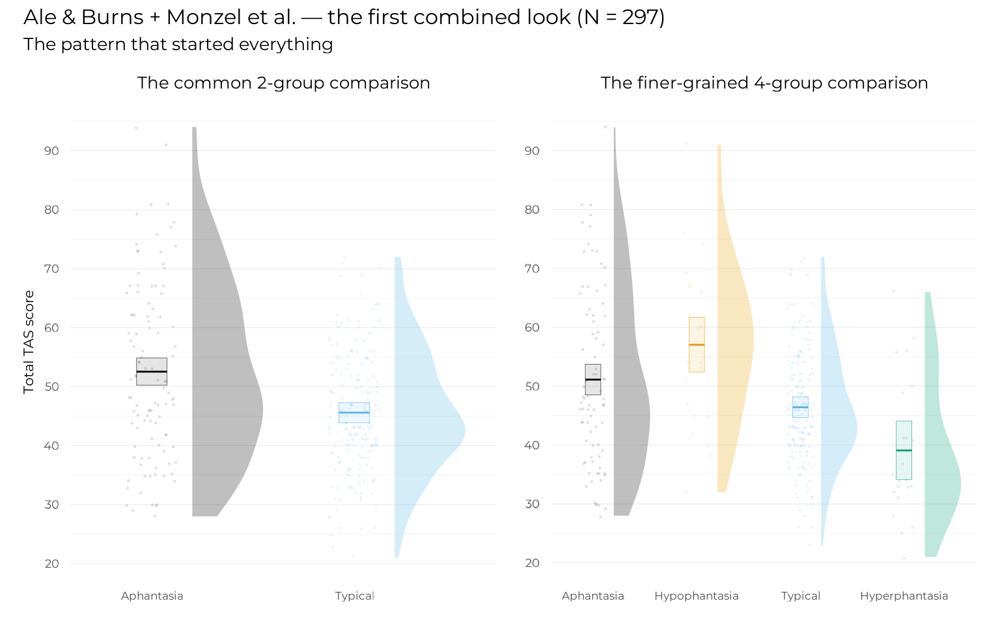
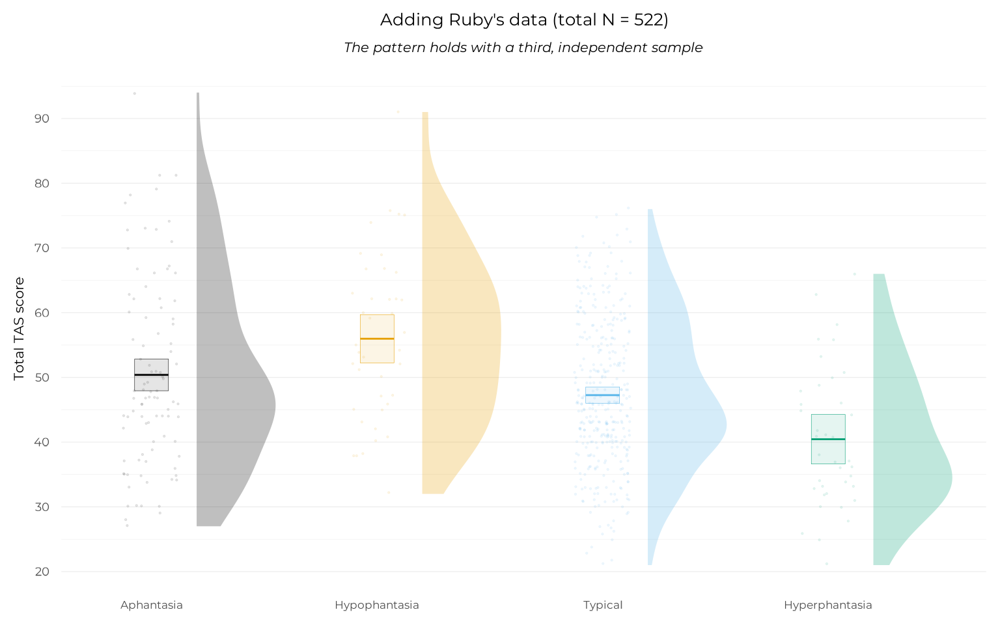
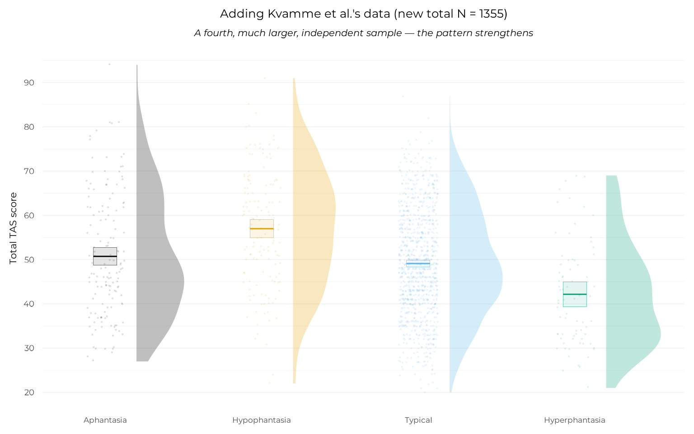
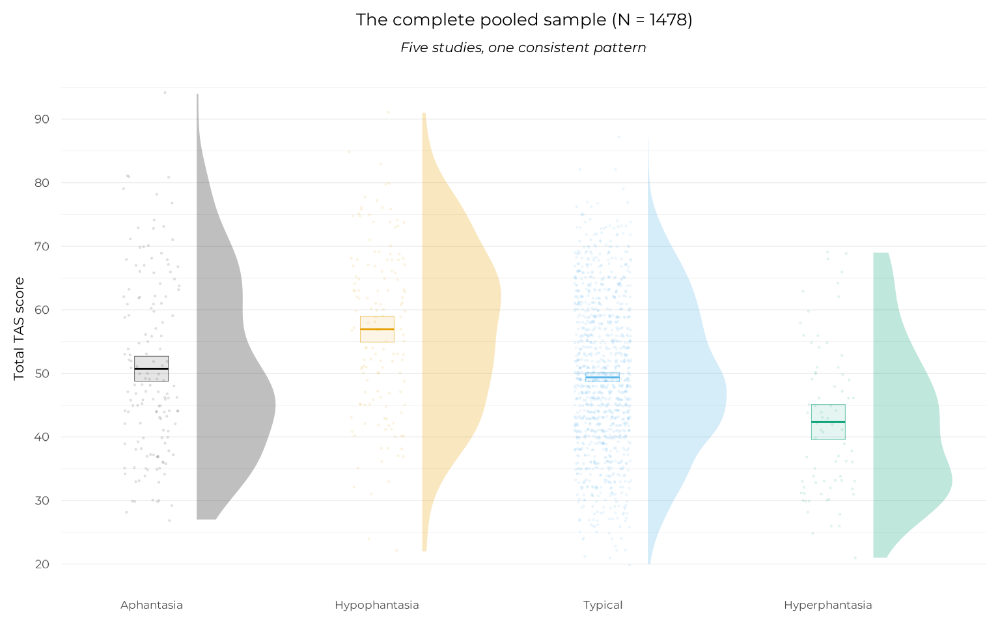

How this study found its shape
Source:vignettes/articles/how-this-study-found-its-shape.Rmd
how-this-study-found-its-shape.RmdThis study did not begin as a study. It began as a side question attached to a different one, and the shape it ended up taking was not planned in advance so much as discovered, one dataset at a time. Most papers describe what was found, not how the finding was arrived at. This page exists to tell that second story: the searching, the emailing, the re-analysing after every new dataset arrived. This page is about the discovery process.
A note on voice: this page is written in the first person throughout. That’s not a stylistic default: most of the searching, emailing, and re-analysing described here happened as solo, iterative work between datasets, often before there was a clear “we” to speak for. The manuscript itself credits contributions properly in the conventional third person; this page simply reflects how the work actually unfolded, day to day.
Where it started
I was preparing for a larger planned study on aphantasia and alexithymia, together with Gaën Plancher, Marine Mas, and Olivier Luminet. That study was going to use a fuller battery of questionnaires than the usual VVIQ (visual imagery) and TAS-20 (alexithymia) alone, since we were, and remain, fairly critical of what those two standard instruments actually capture on their own.
Before designing that study, I wanted to ground it in what was already known. So the first, modest step was simply to see how much existing data on the VVIQ and TAS-20 already existed, to get a sense of expected effect sizes and to plan sensible sequential analyses.
Ale and Burns, and a locked door
On October 13, 2025, I wrote to Edwin Burns about a preprint he and his co-author had posted the year before, on aphantasia, alexithymia, and PTSD symptomatology: doi.org/10.31234/osf.io/kj5d3. Their paper reported analyses of alexithymia and PTSD separately in relation to aphantasia, but not the direct relationship between aphantasia and alexithymia themselves, i.e., the co-occurrence question. I asked whether that had simply not been reported, and mentioned that I’d been curious to look at their data myself, except the OSF link in the paper pointed to a private repository.
Edwin Burns kindly shared the dataset. A short back-and-forth followed in which I flagged what turned out to be a real discrepancy in how the TAS-20 total score had been computed in the file — the kind of routine data-quality check that’s worth doing on any second-hand dataset before trusting it, and a good habit to have gotten into early, since it would matter again later with a much larger dataset. Edwin Burns confirmed the issue, and by October 29, the correction was in place and the data were usable.
Ale and Burns’ (2024) final sample: 192 English-speaking participants (122 females, 3 other genders; mean age 38.7, SD 11.4; range 18-86), recruited via social media, now openly archived on the OSF of the present study (https://doi.org/10.17605/OSF.IO/B837S).
Monzel, and the first pattern with a finer split
I collected the Monzel et al. (2024) dataset in the meantime: 105 English-speaking participants (74 females; mean age 27.9, SD 9.29; range 18-59), recruited via the Aphantasia Research Project Bonn’s participant database, also openly archived on their own OSF project (osf.io/y9c8g).
Monzel et al.’s original paper had split their own sample at VVIQ < 23 (aphantasia) versus VVIQ > 33 (typical imagers), following the conventions of the time, and reported that aphantasics scored higher on two of the TAS-20’s three subscales. Likewise (even though they didn’t compare VVIQ and TAS explicitly), Ale & Burns used a VVIQ < 32 threshold to defined aphantasia. Redoing the comparison between groups on the combined Ale & Burns + Monzel et al. sample, but this time splitting the aphantasia range itself — complete aphantasia (VVIQ = 16) from hypophantasia (VVIQ 17-32) — told a different, more specific story: it looked as though the hypophantasia sub-group was driving the elevated scores, while complete aphantasics sat much closer to typical imagers than the coarser two-group split had suggested.
Here is that first combined view, reproduced from the current, corrected data:
early_data <- all_data |> dplyr::filter(study %in% c("burns", "monzel"))
plot_2g <-
plot_group_violins(
tas ~ vviq_group_2,
data = early_data,
y_lab = "Total TAS score",
base_size = 16
) +
scale_x_aphantasia(add = c(0.4, 0.7)) +
scale_discrete_aphantasia() +
ggplot2::labs(title = "The common 2-group comparison")
plot_4g <-
plot_group_violins(
tas ~ vviq_group_4,
data = early_data,
y_lab = "Total TAS score",
base_size = 16
) +
scale_x_aphantasia(add = c(0.4, 0.7)) +
scale_discrete_aphantasia() +
ggplot2::labs(title = "The finer-grained 4-group comparison")
plot_2g + plot_4g +
plot_layout(axis_titles = "collect") +
plot_annotation(
title = "Ale & Burns + Monzel et al. — the first combined look (N = 297)",
subtitle = "The pattern that started everything",
theme = theme(text = element_text(family ="Montserrat", size = 20))
)
A negative relationship between visual imagery and alexithymia was already visible from hypophantasia through hyperphantasia, but complete aphantasics (the right panel’s grey group) were “out of place”: something different seemed to be happening among people with a complete absence of imagery specifically. The common 2-group split (left panel) does not show this at all: it simply averages complete aphantasics in with everyone below the threshold, hiding exactly the distinction that turned out to matter.
This was the first sign that the eventual shape of the paper’s finding — complete absence of imagery behaving differently from merely weak imagery — was not going to be a story that a single linear relationship, or even a simple two-group split, could tell well.
Ruby, analysed the same day
Perrine Ruby shared her dataset on October 29, 2025, and I ran the same analyses that same day, using the package structure that had by then already taken shape from the Ale & Burns / Monzel et al. work. Ruby’s dataset (later updated in January 2026 with 20 additional participants), 225 French participants (180 females, 42 males, 3 other; mean age 36, SD 16.1; range 10-82), collected as part of a study on the sensory and emotional characteristics of autobiographical and dream memories, also surfaced an incidental relationship between VVIQ and dream recall frequency, which sits outside the scope of this study and was set aside.
data_with_ruby <- all_data |> dplyr::filter(study %in% c("burns", "monzel", "ruby"))
plot_group_violins(
tas ~ vviq_group_4,
data = data_with_ruby,
y_lab = "Total TAS score",
base_size = 16
) +
scale_x_aphantasia(add = c(0.4, 0.7)) +
scale_discrete_aphantasia() +
ggplot2::labs(
title = "Adding Ruby's data (total N = 522)",
subtitle = "The pattern holds with a third, independent sample"
)
Even with Ruby’s data, a large, independent sample with another native language and sampling methods (no specific focus on aphantasia initially), the pattern held.
An independent discovery, and a second correction
Midway through this process, Timo Kvamme and colleagues posted a preprint reporting a very similar pattern in a large, independent sample: opposing relationships between VVIQ and alexithymia either side of a fixed VVIQ = 32 threshold, what became Kvamme et al. (2026) once published. I reached out, and Timo Kvamme generously agreed to share their data.
The same kind of data-quality check that had mattered for Ale & Burns’ data mattered again here, at a larger scale: on November 12, 2025, I noticed that several TAS-20 items had been reversed incorrectly in the shared dataset’s preprocessing script. Timo Kvamme confirmed the oversight and corrected it the same day. Their final sample was substantial: 833 English-speaking participants (426 females, 5 other genders; mean age 40.5, SD 13.4; range 18-83), recruited through Prolific and a pre-existing aphantasia database specifically to cover the full range of imagery vividness.
data_with_kvamme <- all_data |> dplyr::filter(study %in% c("burns", "monzel", "ruby", "kvamme"))
plot_group_violins(
tas ~ vviq_group_4,
data = data_with_kvamme,
y_lab = "Total TAS score",
base_size = 16
) +
scale_x_aphantasia(add = c(0.4, 0.7)) +
scale_discrete_aphantasia() +
ggplot2::labs(
title = "Adding Kvamme et al.'s data (new total N = 1355)",
subtitle = "A fourth, much larger, independent sample — the pattern strengthens"
)
Kvamme et al.’s own published analysis (a fixed split at VVIQ = 32, described in full on the model comparison page) reached a related but distinct conclusion using a threshold chosen by hand, rather than estimated from the data. That comparison, and what our own, data-driven estimate of where the relationship actually changes shape turned out to say, is one of the more interesting methodological threads in this whole project, and gets its own full treatment later in this Extended Online Report.
Mas & Luminet, completing the pool
The last dataset to arrive, on December 12, 2025, came from Marine Mas and Olivier Luminet, collected as part of a preregistered lab study on alexithymia and mental representations (Mas, 2025). 123 French-speaking participants (110 females; mean age 19.78, SD 1.15; range 18-24) were recruited from a research methods course. The particularity of this dataset is that it was collected without any aphantasia-targeted recruitment (Ruby’s did some at the end), and as a consequence contains only 2 hypophantasics, 1 hyperphantasic and no complete aphantasics. It exhibited the negative VVIQ-TAS relationship on its VVIQ range, and further strengthened the pattern on that part of the continuum.
plot_group_violins(
tas ~ vviq_group_4,
data = all_data,
y_lab = "Total TAS score",
base_size = 16
) +
scale_x_aphantasia(add = c(0.4, 0.7)) +
scale_discrete_aphantasia() +
ggplot2::labs(
title = "The complete pooled sample (N = 1478)",
subtitle = "Five studies, one consistent pattern"
)
From groundwork to a paper in its own right
None of this was originally meant to be the study. It was meant to be groundwork: a way of estimating expected effect sizes before designing the larger study (with 7 different questionnaires!) mentioned at the start of this page. It was in discussing the pooled, cross-dataset pattern with Perrine Ruby that the project changed shape: what had been preparation looked, on its own, like a finding worth reporting — with the eventual four-group classification, and later the non-linear modelling approach described on the model comparison page, as its distinguishing methodological contributions.
Dead ends, for the record
Not every dataset search leads anywhere, and it is worth recording the ones that did not — both because they are a real part of how this project came together, and because they remain useful references for anyone wondering whether earlier work exists on this specific combination of measures.
I contacted the authors of three studies unrelated to aphantasia that had used both the VVIQ and TAS-20:
- Wang & Yang (2024), Mental Imagery in the Relationship between Alexithymia and Parental Psychological Control, doi.org/10.3390/bs14030183. N = 282; the authors reported significant Pearson correlation of -.44 across the whole sample, -.28 in the alexithymic group alone, and -.21 in the non-alexithymic group. No distribution of VVIQ scores was reported, so no way of knowing whether or not extreme imagery groups were present. No response from the authors.
- Jungmann et al. (2022), Erfassung der Lebendigkeit mentaler Vorstellungsbilder, doi.org/10.1026/0012-1924/a000291. N = 300; the authors reported (in their supplementary materials) weak but significant correlations of -.17, -.14 and -.15, -.13 between the TAS and the total VVIQ, “Person”, “Shop” and “Landscape” groups of items respectively (relationship with the “Sunrise” group was a non-significant -.07). No distribution of VVIQ scores either. No response from the corresponding author.
- Leving (2024), an unpublished Master’s thesis supervised by Jeanne Watson at the University of Toronto (utoronto.scholaris.ca). N = 62; she reported a significant -.59 correlation between the TAS and VVIQ. No distribution of VVIQ scores either. I wrote to Professor Watson directly; no response.
I also contacted Alfredo Campos regarding Campos et al.’s (2000) Alexithymia and mental imagery (doi.org/10.1016/S0191-8869(99)00231-7). N = 133; the authors reported a significant -.23 correlation between the VVIQ and total TAS scores, but found that dividing by TAS subscale showed that the significant correlation held only for the Difficulty describing feelings (-.23), but not with Difficulty identifying feelings (-.19) or Externally oriented thinking (-.19). Professor Campos responded, but explained that he had lost contact with his co-authors and had never held the data himself: so, more than two decades on, that dataset is simply gone. It is a small, concrete reminder of what data-sharing norms looked like before the open science practices this project relies on became standard, and a large part of why this project’s own data and code are archived as thoroughly as they are (see the OSF project and this report’s own GitHub repository).
Contact me!
If you happen to know other studies that used these two questionnaires together, feel free to contact me, I’d be happy to update the analyses with new data.
Continuing through the Extended Online Report: this is the first page. To keep reading in order, continue to the sample description next. Or jump straight to the model comparison, floor-group model, model diagnostics, implementation notes, or for those who come after.
References
#> ─ Session info ───────────────────────────────────────────────────────────────
#> setting value
#> version R version 4.6.1 (2026-06-24)
#> os Ubuntu 22.04.5 LTS
#> system x86_64, linux-gnu
#> ui X11
#> language en
#> collate C.UTF-8
#> ctype C.UTF-8
#> tz UTC
#> date 2026-08-27
#> pandoc 3.8.3 @ /opt/hostedtoolcache/pandoc/3.8.3/x64/ (via rmarkdown)
#> quarto NA
#>
#> ─ Packages ───────────────────────────────────────────────────────────────────
#> ! package * version date (UTC) lib source
#> aphantasiaEmotions * 1.0 2026-08-27 [1] local
#> backports 1.5.1 2026-04-03 [1] RSPM
#> bayestestR 0.18.1 2026-05-24 [1] RSPM
#> P bslib 0.12.0 2026-08-04 [?] RSPM
#> P cachem 1.1.0 2024-05-16 [?] RSPM
#> checkmate 2.3.4 2026-02-03 [1] RSPM
#> P cli 3.6.6 2026-04-09 [?] RSPM
#> P crayon 1.5.3 2024-06-20 [?] RSPM
#> P curl 8.0.0 2026-08-25 [?] RSPM
#> data.table 1.18.6.1 2026-08-24 [1] RSPM
#> datawizard 1.3.1 2026-04-26 [1] RSPM
#> P desc 1.4.3 2023-12-10 [?] RSPM
#> P devtools * 2.5.2 2026-04-30 [?] RSPM
#> P digest 0.6.39 2025-11-19 [?] RSPM
#> dplyr 1.2.1 2026-04-03 [1] RSPM
#> P ellipsis 0.3.3 2026-04-04 [?] RSPM
#> P evaluate 1.0.5 2025-08-27 [?] RSPM
#> farver 2.1.2 2024-05-13 [1] RSPM
#> P fastmap 1.2.0 2024-05-15 [?] RSPM
#> P fs 2.1.0 2026-04-18 [?] RSPM
#> generics 0.1.4 2025-05-09 [1] RSPM
#> ggplot2 * 4.0.3 2026-04-22 [1] RSPM
#> P glue 1.8.1 2026-04-17 [?] RSPM
#> gtable 0.3.6 2024-10-25 [1] RSPM
#> P htmltools 0.5.9 2025-12-04 [?] RSPM
#> P htmlwidgets 1.6.4 2023-12-06 [?] RSPM
#> insight 1.5.3 2026-08-25 [1] RSPM
#> P jquerylib 0.1.4 2021-04-26 [?] RSPM
#> P jsonlite 2.0.0 2025-03-27 [?] RSPM
#> P knitr 1.51 2025-12-20 [?] RSPM
#> P lifecycle 1.0.5 2026-01-08 [?] RSPM
#> P magrittr 2.0.5 2026-04-04 [?] RSPM
#> marginaleffects 0.32.0 2026-02-14 [1] RSPM
#> P memoise 2.0.1 2021-11-26 [?] RSPM
#> modelbased 0.16.0 2026-06-30 [1] RSPM
#> P otel 0.2.0 2025-08-29 [?] RSPM
#> parameters 0.29.2 2026-06-28 [1] RSPM
#> patchwork * 1.3.2 2025-08-25 [1] RSPM
#> P pillar 1.11.1 2025-09-17 [?] RSPM
#> P pkgbuild 1.4.8 2025-05-26 [?] RSPM
#> P pkgconfig 2.0.3 2019-09-22 [?] RSPM
#> P pkgdown 2.2.1 2026-07-07 [?] RSPM
#> P pkgload 1.5.3 2026-06-15 [?] RSPM
#> P purrr 1.2.2 2026-04-10 [?] RSPM
#> P R6 2.6.1 2025-02-15 [?] RSPM
#> P ragg 1.5.2 2026-03-23 [?] RSPM
#> RColorBrewer 1.1-3 2022-04-03 [1] RSPM
#> renv 1.1.4 2025-03-20 [1] RSPM (R 4.6.1)
#> P rlang 1.3.0 2026-07-05 [?] RSPM
#> P rmarkdown 2.31 2026-03-26 [?] RSPM
#> S7 0.2.2 2026-04-22 [1] RSPM
#> P sass 0.4.10 2025-04-11 [?] RSPM
#> scales 1.4.0 2025-04-24 [1] RSPM
#> see 0.14.1 2026-06-29 [1] RSPM
#> P sessioninfo 1.2.4 2026-06-04 [?] RSPM
#> showtext 0.9-8 2026-03-21 [1] RSPM
#> showtextdb 3.0 2020-06-04 [1] RSPM
#> sysfonts 0.8.9 2024-03-02 [1] RSPM
#> P systemfonts 1.3.2 2026-03-05 [?] RSPM
#> P textshaping 1.0.5 2026-03-06 [?] RSPM
#> P tibble 3.3.1 2026-01-11 [?] RSPM
#> tidyselect 1.2.1 2024-03-11 [1] RSPM
#> P usethis * 3.2.1 2025-09-06 [?] RSPM
#> P vctrs 0.7.3 2026-04-11 [?] RSPM
#> P withr 3.0.3 2026-06-19 [?] RSPM
#> P xfun 0.60 2026-07-09 [?] RSPM
#> P yaml 2.3.12 2025-12-10 [?] RSPM
#>
#> [1] /home/runner/.cache/R/renv/library/aphantasiaEmotions-8f3b5e1f/linux-ubuntu-jammy/R-4.6/x86_64-pc-linux-gnu
#> [2] /home/runner/.cache/R/renv/sandbox/linux-ubuntu-jammy/R-4.6/x86_64-pc-linux-gnu/e7c0fad7
#>
#> * ── Packages attached to the search path.
#> P ── Loaded and on-disk path mismatch.
#>
#> ──────────────────────────────────────────────────────────────────────────────